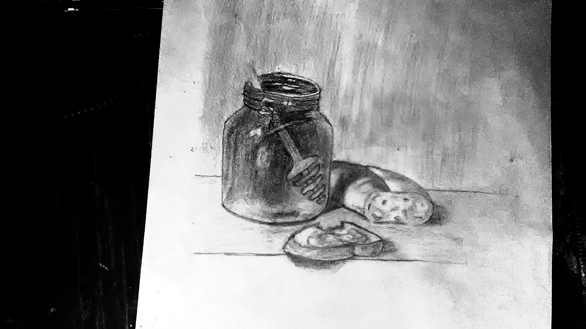
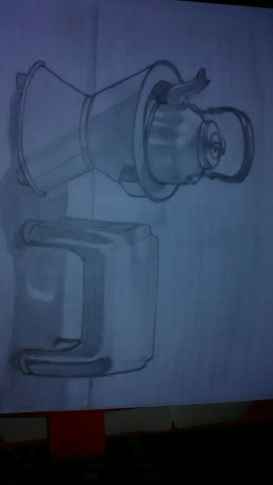

I heard that portray drawing is the most neccesary thing we should do
in architectural entrance exam.But this thing could also help us in
different way,like if we like drawing 3D images this portray drawing
can help us to go through it.I spoted this portray drawing in architectural
view in some kind of practice that can help me understand how to look something
as it is


as I mentioned in the above this portray drawings makes a lot of benefits in
any ways, because it is something that can help on 3D pattern picture drawings.
so therefore it can help me in the architectural 3d drawings.
eventually I would like to say that arts and architecture are much related in There
actions.I tried to show you some of my experiance in relating with architecture
and art.I think this would be a helpfull experiance sharing.